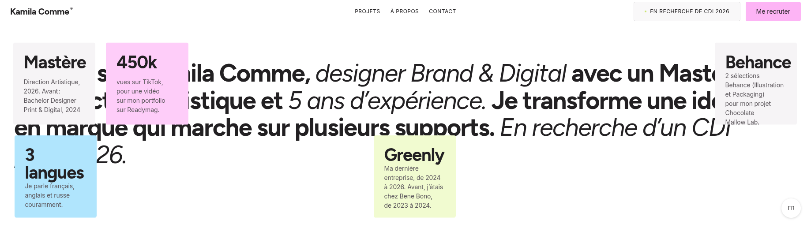
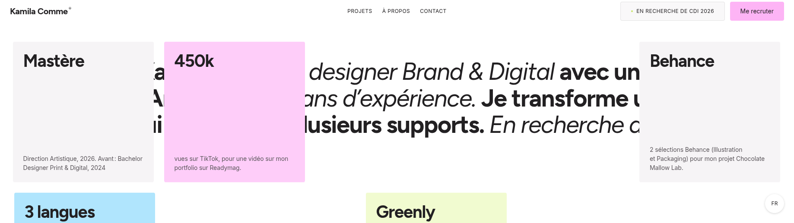
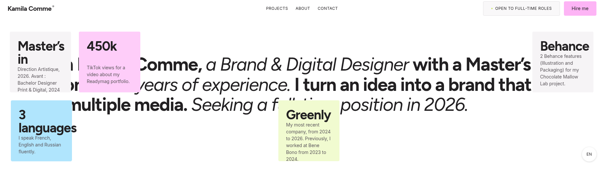
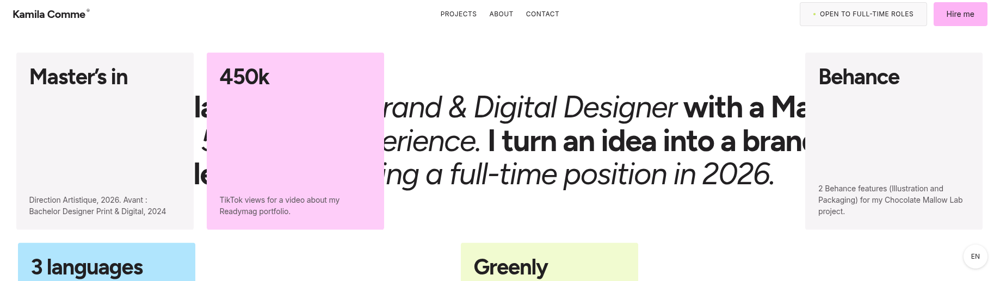
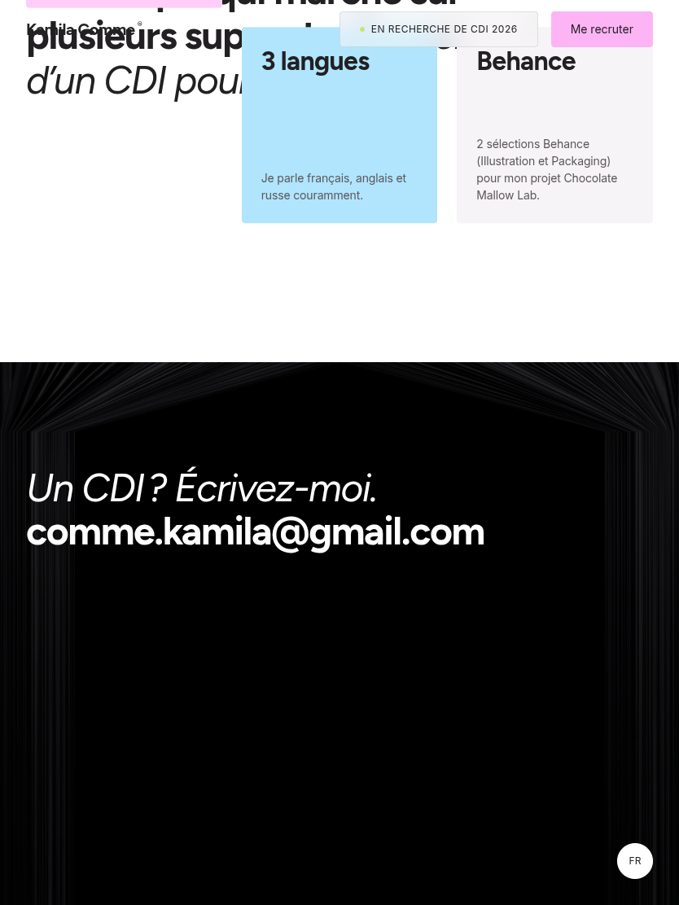
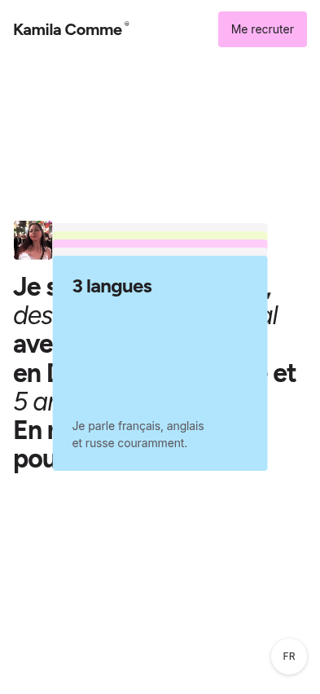
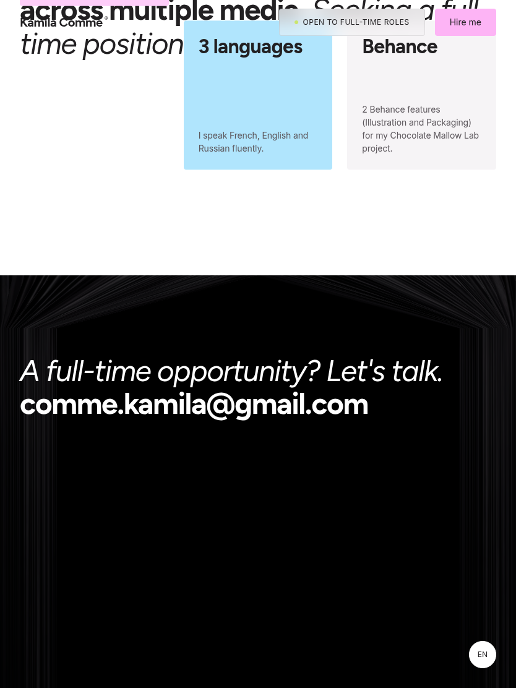
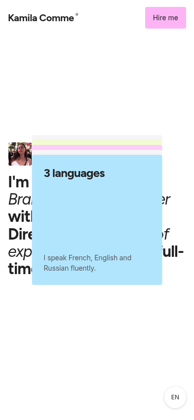

About cards: current layout and proposed fit fix
Actual Chromium captures from the French and English routes. Each pair uses the same viewport and language: current implementation on the left, proposed geometry on the right.
What changes: desktop About card size no longer shrinks to fit a short viewport's height. At 1838×517, all five cards retain their 326px square size, so titles and descriptions remain inside the card bounds at their existing 40px/14px typography. The overall composition can extend beyond a short viewport and be naturally cropped by the stage, as requested; the card text itself is not squeezed or clipped. Normal desktop, tablet and mobile control captures are included to show the unaffected sizes.
1838×517 · French
Before: 186.5×186.5px cards; descriptions overran card bounds by up to 25.5px (Behance) and 4.5px (450k). After: 326×326px cards; all title and description line boxes are within their card bounds. Typography remains 40px / 14px.


1838×517 · English
Before: 186.5×186.5px cards; description overrun reached 25.5px. After: 326×326px cards; every measured title and description line box is inside its card. Typography remains 40px / 14px.


French · unchanged-size controls


Both: 326px square cards.


English · unchanged-size controls


Both: 326px square cards.


Measurements are also available in before/measurements.json and after/measurements.json. Historical visual references were not changed.